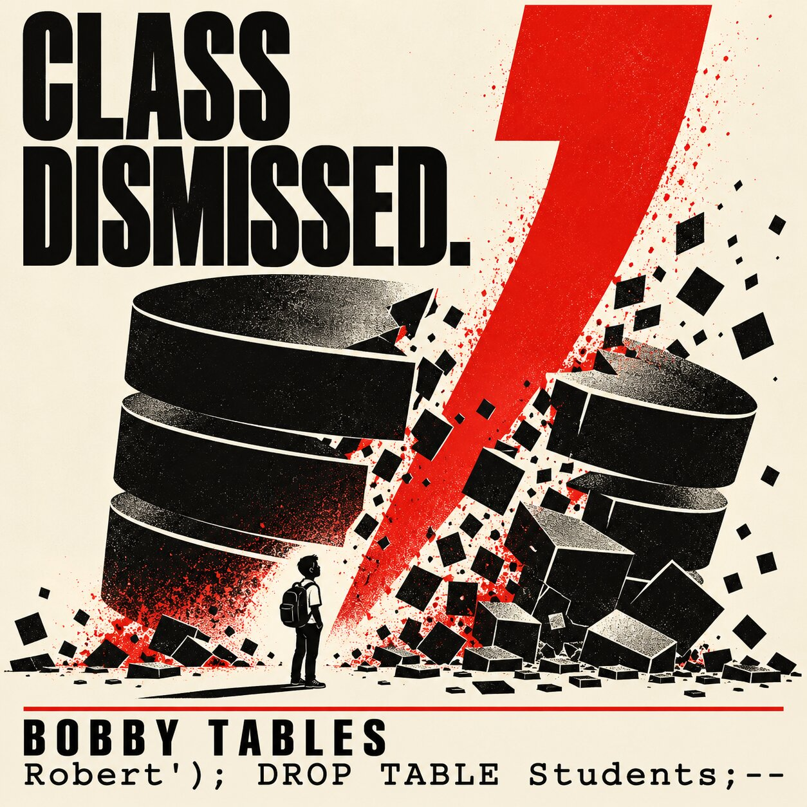

RUBY · PG DRIVER / POSTGRESQL
# Query and values travel separately.
conn.exec_params(
"INSERT INTO students (name) VALUES ($1)",
[name]
)A SMALL INPUT. A BIG PROBLEM.
One unusual name.
One very bad day for a database.
A visual lesson in what happens when a program mistakes someone’s words for its own instructions.
Meet the exploit ↘
01 / THE ORIGIN STORY
Bobby Tables comes from Randall Munroe’s xkcd comic “Exploits of a Mom” (#327). A school enters a child’s unusual name—and loses its student records.
The punchline is SQL injection: an application builds a database command by stitching untrusted input into SQL. Input can then change what the command means.
The real lesson? A name should never get to rewrite the instructions.
THE NAME, UNDER A MAGNIFYING GLASS
01 / THE DISGUISERobert begins as ordinary text.
02 / THE BREAKOUT'); closes the string and INSERT, then ends the statement.
03 / THE COMMANDDROP TABLE requests removal of the entire table.
04 / THE COVER-UP-- comments out the remainder of the line in this example.
This payload assumes a matching query shape, a driver that permits multiple statements, and permission to drop the table. SQL dialects differ; injection can still be dangerous without any of those exact conditions.
02 / THE EXPERIMENT
Try a normal name. Then invite Bobby.
Switch query modes to see what changes.
SCHOOL ENROLLMENT FORM
Illustrative browser-only simulation. No SQL is executed and no data is sent or saved. It models the shown payload, not every possible SQL input.
PARAMETER $1 · SENT SEPARATELY
03 / THE FIX
Define the SQL structure first.
Pass the values separately.
With bound parameters, the database treats the whole name as a value. Quotes, semicolons, and SQL-looking words don’t become new instructions.
RUBY · PG DRIVER / POSTGRESQL
# Query and values travel separately.
conn.exec_params(
"INSERT INTO students (name) VALUES ($1)",
[name]
)RUBY ON RAILS · ACTIVE RECORD
# Use the model API for this insert.
Student.create!(name: name)
# Use hash conditions for lookups.
Student.where(name: name)An ORM helps when you use its safe APIs. Interpolating input into raw SQL is still unsafe.
04 / TAKE IT WITH YOU
Use prepared statements or safe ORM APIs. Don’t build SQL by concatenating or interpolating user input.
Parameters represent values, not table names or sort directions. Map dynamic SQL structure to a fixed allowlist.
Give application database accounts only the permissions they need. Keep schema-changing privileges out of normal runtime access.
KEEP LEARNING